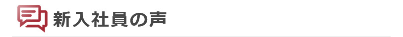

入社の決め手
- 工場での生産に携われ、かつシステムも提供できる仕事に強い魅力を感じたからです。
- 仕事内容が自分のやりたいことと合致していたこと、OB訪問の際に聞いた会社の雰囲気等が決め手でした。
- 充実した教育制度、福利厚生が決め手です。大同特殊鋼という大きな企業のグループ会社だからこそ安定して働くことができます。また、エリア職なら地元を離れずに働けるということも魅力の一つでした。
- 面接での雰囲気が良かったこと、システムを提供する相手が近く、自分の関わったシステムがどう使われているか分かりやすいのではないかと思ったこと、内定者懇親会や工場見学などでお会いした先輩方の雰囲気が良かったことの3点が主な理由です。
- もともと情報系の仕事に就きたいと考えていました。その後、選考や職場の雰囲気等が後押しとなり入社を決めました。
- 製造業とＩＴの両方に興味があったので、この会社でならその両方に携わることができる考え、ＳＩＴ(スターインフォテック)に決めました。説明会や面接の雰囲気が良かったことも理由の一つです。
- 緊張して面接会場に行きましたが、面接前に先輩社員の方が緊張をほぐせるよう、面接のアドバイスをしてくれたりしたので、和やかな雰囲気で面接を行うことができました。気配りのできる優しい雰囲気の会社だと思い、入社を決めました。
- 面接の雰囲気がとても和やかで、リラックスして素直な気持ちで受け答えができました。そうした雰囲気の中で仕事をしたいと感じ、入社を決めました。
- 説明会で文系出身の先輩方も活躍しているということを教えてもらい、その後実際にOGの先輩のお話を聞き、自分もここで働きたいと思いました。
入社後の印象
- 明く、頼りになる先輩が多いと思いました。
- 会議や打ち合わせが多いという印象です。仕事は一人ではできないため、こういう場を設けコミュニケーションを密にとる必要があると感じました。
- 毎日遅くまで残業していることが最初のうちはとても印象的でした。そのぶん責任感も大きく、現在ではとてもやりがいのある仕事だと感じています。
- 入社前と後で印象が大きく変わったということはありませんが、ITの勉強をするだけではなく大同特殊鋼でどのように製品が作られているのかなども学んでいかなければならないことに驚きました。
- 堅苦しい雰囲気はなく、仕事でもそれ以外でもコミュニケーションが取りやすいと感じました。
- 入社前は、一日中パソコンの前で仕事をするのだろうと思っていましたが実際には他の部署との会議や現場での作業などが多くあり、毎日新鮮な気分です。
- 懇親会が多く、社員とのコミュニケーションを大事にしている会社だと思いました。
- 社員同士がコミュニケーションを密にとっていて、チームプレイでの活動がとても活発であると感じました。
- 入社前から感じていたのですが、丁寧に対応してくれる方が多いという印象です。研修の時も配属されてからも、質問など分からないことに対してとても親切に説明していただいています。
新人研修の感想
- 大同グループの同期とも仲良くなれるいい機会でした。プログラマー研修は優しく丁寧に教えてもらえるので楽しく覚えることができたと思います。
- グループ全体の研修では慣れないことも多く大変でしたが、仲間がたくさんでき、とても有意義なものでした。自社研修では、時には同期メンバーと協力しながらプログラミングに関する勉強ができ、実際の業務でも使えるような知識、考え方を学べたと思います。
- 大同全体研修は辛く感じることもありましたが、たくさんの人と知り合うことができて楽しかったです。走歩ラリーだけは普段から運動している人でないとかなりしんどいと思います。ＳＩＴ新人研修ではＣＯＢＯＬが難しかったですが、大きく情報について学ぶことができました。
- 入社してすぐの全体研修では、グループ会社や関連会社の知らない人の多さに圧倒されましたが、終わるころには知り合いも増えて楽しかったです。配属後もＯＪＴという形で教育は続くので、安心して社会人生活をスタートすることができました。
- 合同研修は今までで経験のないことの繰り返しでしたが、その分刺激もあり、良い研修でした。
- 入社直後の合宿研修や工場実習は大変な事もありましたが大同特殊鋼やグループ会社の多くの人と交流ができ、本当に良い経験となりました。配属前のプログラミング研修ではプログラミングの基礎から教えていただき、わからないところは同期で協力して考えたりしました。これらの研修で学んだことは今仕事をしていく上で本当に役立っています。
- ＳＩＴだけではなく、大同グループ全体での研修に参加でき、会社を越えた同期をつくることができました。グループ研修を終えた後でも、他の研修や仕事で関わる機会があるので、仕事がしやすい同期を増やすことができてよかったと思いました。
- 大同グループ全体で行われた研修では、チームで協力して困難を乗り越えることの大切さを知ることができました。ＳＩＴ社内での研修では、データベースやプログラミングの基礎を学ぶことができ、分からない部分は講師の方や同期に聞くことで解決するなど、楽しんで研修を行うことができました。
- ２カ月の研修を通して、学生から社会人への気持ちの切り替えができたと思います。最初は不安もありましたが、研修を通してＳＩＴの同期はもちろん、大同特殊鋼やその関連会社の同期の人たちとのつながりを得ることができました。
私の職場紹介
- 主にインフラの仕事をしています。今は社員がＰＣやサーバの管理をしたり、新技術の評価、標準化をしています。明るい人が多い職場です。
- 様々なことが経験できる職場だと思っています。また勉強会等も開かれるため、成長の機会が多いと思います。
- 主に関連会社のシステム開発・保守を行っており、部内でも営業・保守・開発の３つの業種に分かれています。皆さんとても暖かい方たちばかりでどんなに質問してもとても丁寧に教えてくださいます。
- ＳＩＴの中で最も人数のいる場所で働いているので、静かすぎることもなく良い環境だと思います。また、工場の敷地内ですが都会で働くよりも周りに緑が多く海もあります。
- 先輩社員は皆厳しくもあり優しい方々で、大変だと思うことはありますが、その分やりがいを感じることができる職場です。
- 工場の操業に密接に関わる部署なので工場に良く足を運びます。自分で作ったシステムが実際に動いているのが見えるのでとてもやりがいを感じます。職場の皆さんは困ったことがあれば、親身に相談に乗ってくれて、サポートしていただけるのでとても働きやすい職場であると思います。
- 自分の部署だけではなく、部署間を越えて仕事することができます。また、仕事でわからないことを質問したら、一から丁寧に教えてくださるので、とても働きやすい環境だと思います。
- 新人をとても大切にしてくれていると感じました。個性的な方が多く、楽しい職場です。
- 人数は少ないのですが、その分同じ室内の方たちとお話する機会が多く、とても働きやすいです。分からないことがあると丁寧に教えていただけるので勉強になります。
今後の抱負
- 今はブラザーと呼ばれるマンツーマンで教えてくれる先輩に教わりながら仕事をしています。目標はブラザーの実力を早く抜かすことです！
- 与えられた仕事をしっかりこなせるようになることです。そのためにも業務に関する知識、開発に関する知識等様々なことを学びながら成長したいと思います。
- 一人前のプログラマーになることが一番の目標です。今はまだ先輩方の手を借りての業務ですが、いずれは私が教える立場に立つものとして、少しずつでもいいので日々前進することが毎日の目標です。
- まだまだプログラマーにもなりきれていません。当面の目標は自分の所属しているチームが担当しているシステムについて理解していくことと、プログラマーとしてのスキルを磨いていくことです。
- 仕事を覚えることはもちろんですが、自分がどうあるべきかということを考えて日々自身の向上に努めていきたいと思います。
- まだまだ分からないことが多いので一生懸命学び、経験を積み、早く一人前になりたいです。また、現場にたくさん足を運び、現場の方に顔を覚えてもらいたいです。
- システムは日々進化していくので、毎日学ぶことを怠らず常に成長していきたいと考えています。また、今の仕事は様々な人と関わることが多いので、システムだけでなくコミュニケーションのスキルも同時に磨いていきたいと思います。
- 入社から今までの教育・業務を通してさまざまなことを学びました。まだまだ学ぶことはたくさんありますが、これまでに学んだことを十分に活かし、職場の主力になれるよう努めます。
- まだまだ分からないことが多いので、早く一人前になりたいです。そのためには技術だけでなく知識も必要になると思うので、資格の勉強も頑張りたいと思っています。